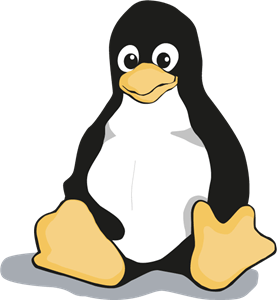
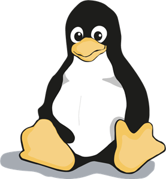

Welcome!
Welcome to my portfolio! Feel free to explore my projects, learn more about me, and view my resume.
Welcome to my portfolio! Feel free to explore my projects, learn more about me, and view my resume.
I started my college journey at SNHU before transferring to UMass Lowell. At SNHU, the Computer Science program was very group project-focused. Each semester, we picked a project that interested us. Mine included building a 2D game in Unity and creating a campus social app. That experience really helped me get comfortable with agile project management and taught me how to learn new skills on my own, since the projects were mostly student-driven.
I transferred to UMass Lowell after two years at SNHU because I felt it would be more challenging. Since transferring, I have developed a deeper understanding of programming. I expanded my knowledge of C and C++ while exploring new languages like Python, JavaScrip, and HTML/CSS. My project sequence course was centered around web development which culmanated in a website called Study Space.
After graduating high school in 2016, I served four years on active duty in the U.S. Army as an Airborne Infantryman. That service took me around the world, but I was mainly stationed at Fort Bragg, NC, and deployed to Afghanistan. I am now a sergeant in the Rhode Island Army National Guard and have been serving there for about five years. I am a Squad Leader and a senior rated Jumpmaster. My time in the military has taught me the importance of teamwork, how to work in fast-paced environments and adhere to strict standards.


 
